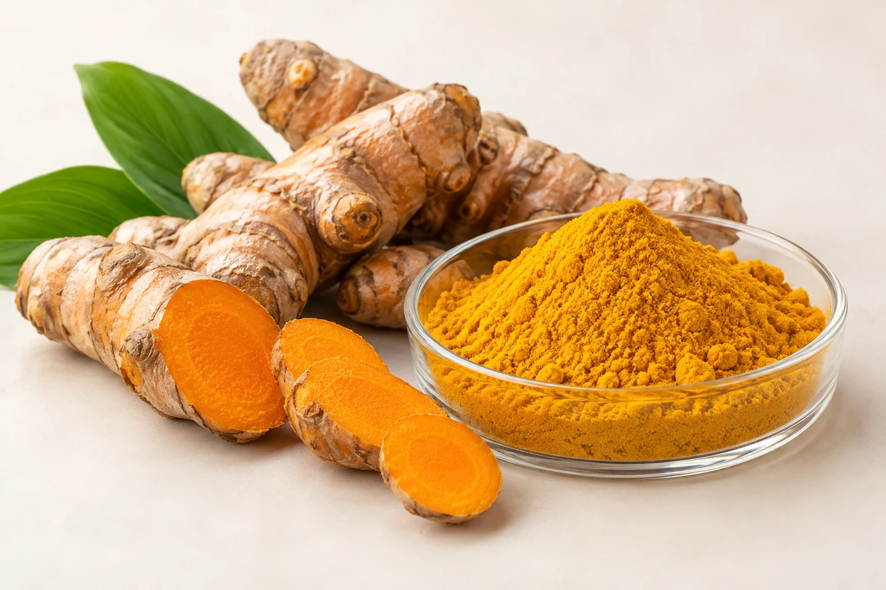

phyto elements
Selected · Tested · Trusted
Botanical extracts with measured quality.
Carefully selected plant extracts, verified against defined standards and supplied with dependable documentation.
EXPLORE PRODUCTS →

Recommended
#0B7CF2 → #20B8D8 → #8FD14F